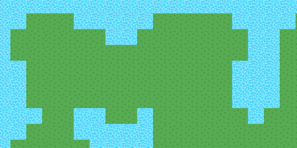

Tile based games are games where the graphics are constructed out of small square, rectangular or hexagonal tiles.
Tile based approach to game development has multiple advantages, such as very fast rendering time, easy map creation, simple collision detection, re-usability of the same graphics via a tileset, possibility of random world generation, and so on.
In this tutorial series I will teach you how to create a tile based game engine that can be extended to create games of many different genres. Techniques learned in this series will be useful even when developing non-tile based games.
The game engine will be developed using Haxe and OpenFL. I'm not going to use any game frameworks for this tutorial. We're going to make a game from scratch!
For efficient graphics rendering we're going to use the Tilesheet class that's included in OpenFL. If you don't know what that is, you should read this tutorial first.
Create a new project in FlashDevelop. You can also use another IDE, of course, in that case I assume that you know what you're doing and can still follow the steps.
In the Main class we'll have to declare a bunch of variables. Firstly, we'll need a Sprite object to hold the Tilesheet-generated graphics, and a Tilesheet object.
private var tilesheetCanvas:Sprite;
private var tilesheet:Tilesheet;Tile map data is stored in 2 dimensional arrays (or matrices, if you will). Declare a new variable, which is an array of arrays of integers.
private var map:Array<Array<Int>>;Finally, add 1 more variable for storing the size of a single tile.
private var tileSize:Int;A tile map is a grid of tiles, which re-uses graphics from a tile set. We don't have a tile set yet, so here's one I made:
The image is 64 pixels wide and 32 pixels high, with two tile graphics - grass and water.
Add this image as an asset to your assets/img/ directory.
Now go to the init() function to initialize everything related to the Tilesheet object.
// Tilesheet initialization
var tilesBitmapData:BitmapData = Assets.getBitmapData("img/set.png");
tilesheetCanvas = new Sprite();
addChild(tilesheetCanvas);
tilesheet = new Tilesheet(tilesBitmapData);
tilesheet.addTileRect(new Rectangle(0, 0, 32, 32));
tilesheet.addTileRect(new Rectangle(32, 0, 32, 32));
Here we load the asset from the directory, create the canvas Sprite, apply the tile set image to a Tilesheet object and create 2 tile rectangles. You may have guessed it - the first tile represents grass, the second - water. Their IDs are 0 and 1 respectively.
Set the tileSize value to 32, since our tiles are both 32x32. Set the map object to a new array of arrays of integers.
I'm going to create a new class TileMap later for applying map data to arrays using a static method create().
// Map data
tileSize = 32;
map = new Array<Array<Int>>();
TileMap.create(map);
You can create a new TileMap class right now. Inside of it, add a create() method which receives a map array as a parameter and applies map data to it. The reason I'm storing this data in a separate class is because I don't want it to clutter up my main class.
This is the simplest way to store level data that I can think of. Perhaps better but a bit more advanced ways would be storing them in files with a custom format, or even simple CSV files, but this will do for now.
Anyway, here's the code for TileMap.hx:
package ;
/**
* Map data.
* @author Kirill Poletaev
*/
class TileMap
{
public static function create(map:Array<Array<Int>>)
{
map.push([1, 1, 1, 1, 1, 1, 1, 1, 1, 1, 1, 1, 1, 1, 1, 1, 1, 1, 1, 1, 1, 1, 1, 1, 1]);
map.push([1, 1, 0, 0, 0, 1, 1, 1, 1, 1, 0, 0, 0, 0, 0, 1, 1, 1, 1, 0, 0, 0, 0, 1, 1]);
map.push([1, 0, 0, 0, 0, 0, 0, 1, 1, 0, 0, 0, 0, 0, 0, 0, 1, 1, 0, 0, 0, 0, 0, 0, 1]);
map.push([1, 0, 0, 0, 0, 0, 0, 0, 0, 0, 0, 0, 0, 0, 0, 0, 1, 1, 0, 0, 0, 0, 0, 0, 1]);
map.push([1, 1, 0, 0, 0, 0, 0, 0, 0, 0, 0, 0, 0, 0, 0, 1, 1, 1, 0, 0, 0, 0, 0, 0, 1]);
map.push([1, 1, 0, 0, 0, 0, 0, 0, 0, 0, 0, 0, 0, 0, 0, 1, 1, 1, 0, 0, 0, 0, 0, 0, 1]);
map.push([1, 1, 0, 0, 0, 0, 0, 0, 0, 0, 0, 0, 0, 0, 0, 1, 1, 1, 0, 0, 0, 0, 0, 0, 1]);
map.push([1, 1, 1, 0, 0, 1, 1, 0, 0, 1, 0, 0, 0, 0, 0, 0, 1, 0, 0, 0, 0, 0, 0, 0, 1]);
map.push([1, 1, 0, 0, 0, 1, 1, 1, 1, 1, 0, 0, 0, 0, 0, 0, 0, 0, 0, 0, 0, 0, 0, 0, 1]);
map.push([1, 0, 0, 0, 0, 0, 1, 1, 1, 1, 0, 0, 0, 0, 0, 0, 0, 0, 0, 0, 0, 0, 0, 0, 1]);
map.push([1, 0, 0, 0, 0, 0, 0, 1, 1, 1, 0, 0, 0, 0, 0, 0, 0, 0, 0, 0, 0, 0, 0, 0, 1]);
map.push([1, 0, 0, 0, 0, 0, 0, 0, 1, 1, 0, 0, 0, 0, 0, 0, 0, 0, 0, 0, 0, 0, 0, 0, 1]);
map.push([1, 0, 0, 0, 0, 0, 0, 0, 1, 1, 0, 0, 0, 0, 0, 0, 0, 0, 0, 0, 0, 0, 0, 0, 1]);
map.push([1, 1, 0, 0, 0, 0, 0, 1, 1, 1, 1, 0, 0, 0, 0, 0, 0, 0, 0, 0, 0, 0, 0, 1, 1]);
map.push([1, 1, 1, 1, 1, 1, 1, 1, 1, 1, 1, 1, 1, 1, 1, 1, 1, 1, 1, 1, 1, 1, 1, 1, 1]);
}
}That's a lot of lines!
Basically, I create a matrix of 0 and 1 values, where the numbers represent the id of the tile to draw. In this case, 0 is grass and 1 is water.
Back to Main.hx, init() function: create a game loop by adding an ENTER_FRAME listener.
// Game loop
stage.addEventListener(Event.ENTER_FRAME, everyFrame);The event handler needs to just loop through the map data rows and columns, generate a tileData array and pass it to the draw call of the Tilesheet object.
private function everyFrame(evt:Event):Void {
var tileData:Array<Float> = [];
for (row in 0...map.length) {
for (cell in 0...map[row].length) {
tileData = tileData.concat([tileSize * cell, tileSize * row, map[row][cell]]);
}
}
tilesheet.drawTiles(tilesheetCanvas.graphics, tileData);
}
We add 3 values to the tileData array for each object - the x coordinate (calculated by multiplying the column index by tileSize), the y coordinate (calculated by multiplying the row index by tileSize), and the tile ID.
If you run the project now, you'll see something like this:
Pretty cool!
Here's the full code to Main.hx:
package ;
import flash.display.BitmapData;
import flash.display.Sprite;
import flash.events.Event;
import flash.Lib;
import openfl.Assets;
import openfl.display.Tilesheet;
import openfl.geom.Rectangle;
/**
* Tile based game.
* @author Kirill Poletaev
*/
class Main extends Sprite
{
private var inited:Bool;
private var tilesheetCanvas:Sprite;
private var tilesheet:Tilesheet;
private var map:Array<Array<Int>>;
private var tileSize:Int;
/* ENTRY POINT */
function resize(e)
{
if (!inited) init();
// else (resize or orientation change)
}
function init()
{
if (inited) return;
inited = true;
// Tilesheet initialization
var tilesBitmapData:BitmapData = Assets.getBitmapData("img/set.png");
tilesheetCanvas = new Sprite();
addChild(tilesheetCanvas);
tilesheet = new Tilesheet(tilesBitmapData);
tilesheet.addTileRect(new Rectangle(0, 0, 32, 32));
tilesheet.addTileRect(new Rectangle(32, 0, 32, 32));
// Map data
tileSize = 32;
map = new Array<Array<Int>>();
TileMap.create(map);
// Game loop
stage.addEventListener(Event.ENTER_FRAME, everyFrame);
}
private function everyFrame(evt:Event):Void {
var tileData:Array<Float> = [];
for (row in 0...map.length) {
for (cell in 0...map[row].length) {
tileData = tileData.concat([tileSize * cell, tileSize * row, map[row][cell]]);
}
}
tilesheet.drawTiles(tilesheetCanvas.graphics, tileData);
}
/* SETUP */
public function new()
{
super();
addEventListener(Event.ADDED_TO_STAGE, added);
}
function added(e)
{
removeEventListener(Event.ADDED_TO_STAGE, added);
stage.addEventListener(Event.RESIZE, resize);
#if ios
haxe.Timer.delay(init, 100); // iOS 6
#else
init();
#end
}
public static function main()
{
// static entry point
Lib.current.stage.align = flash.display.StageAlign.TOP_LEFT;
Lib.current.stage.scaleMode = flash.display.StageScaleMode.NO_SCALE;
Lib.current.addChild(new Main());
}
}
Now we have rendered a small map using tile based approach.
Next time we'll add a player character!